Legal Race Results: Determining a Fair Wind Threshold for 100 Meter Sprint Races
Authors
Affiliation
Brendan Magill
Hamilton College
Edward Trenk
Hamilton College
Tural Sadigov
Hamilton College
Published
November 16, 2022
Abstract
In the sport of track and field, the 100 meter sprint is a popular distance run in a straight line to test athletes top speed. Due to its short, fast nature, the race’s finish times are greatly affected by the wind which lead to a tailwind threshold of less than 2.0 meters per second required to validate finish times. This study aims to determine if 2.0 m/s is a good wind threshold or if there is a better speed to act as a more fair cutoff. To investigate this, we created linear models to test for independence between wind and results for every wind threshold in the typical range of wind speeds. Our results show that the existing cutoff of 2.0 is not the best possible threshold and a better option would be 2.3 meters per second.
1 Background and Significance
The sport of track and field has been around for hundreds of years where athletes compete at the most basic level to see who can run the fastest, jump the highest, or throw the farthest. In modern day track and field, there are many places for professional runners to compete. One of these is called the Diamond League. The Diamond League, which was founded in 2010, hosts 14 track meets annually in a season that ranges from May to September and is well known for having some of the best athletes in the world.
One popular event is the 100 meter sprint where elite male athletes race for approximately 10 seconds in the ultimate display of top end sprint speed. Because the outdoor 100m race is run in a straight line, the direction of the wind is a major issue in the finishing time of the athletes although their finishing place is not affected since every athlete deals with the same conditions. As a result of this, current regulations require tailwind readings of less than 2 meters/second to certify official race times.
We would like to look at the relationship between tailwind speed and race result times. We will explore the statistical significance of wind speeds above and below the threshold of 2 m/s, with the hope of determining what is a “fair” threshold.
2 Methods
a. Data Collection
The data for this study come from official Diamond League race results. At each race, officials take observational measurements of finish times and wind speed. Finish times are measured by electronic guns and finish cameras, and are recorded with precision to the hundredth of a second, although cameras allow for more precision in the case of tiebreaks. Wind speed is measured with an anemometer placed at the midpoint of the 100 meter lane. Each observation is one instance of an individual competing in a race, and includes these observed measurements along with the athlete’s name, birth year, birth country, race venue, and date.
Unlike a survey, most of the variables in this data set are measured for the race and required for official results, so there are almost no missing data. All personal information fields are required for atheletes to participate in a race, and both result times and wind speed are required for official result certification. The only missing data are unknown values, such as a few athletes’ birth years.
b. Variable Creation
Since race results are skewed right, we created a new variable log_times which is a log-scaled version of race results. These are first shifted down by 8.69 seconds to scale the lowest time to 1 second, then rescaled by the natural logarithm function. Histograms of the original and rescaled times are displayed below.
Code
```{r}#| code-fold: truelibrary(tidyverse)remote <-"https://media.githubusercontent.com/media/"account <-"turalsadigov/"folder <-"MATH_254/main/Datasets%20for%20projects/"file <-"track_data_eddie_branden.csv"url <-str_c(remote, account, folder, file)df <-read_csv(url)df2 <- df %>%mutate(log_times =log(Result -min(Result) +1))df %>%ggplot(aes(x =`Result`, y = ..density..)) +geom_histogram(bins =50, fill ='darkgreen', color ='black') +geom_density(fill ='green4', alpha =0.4) +xlab('Race Result (seconds)') +ylab('Density') +ggtitle("Histogram of Diamond League Men's 100m Race Results")df2 %>%ggplot(aes(x =`log_times`, y = ..density..)) +geom_histogram(bins =50, fill ='darkgreen', color ='black') +geom_density(fill ='green4', alpha =0.4) +xlab('Adjusted Race Result') +ylab('Density') +ggtitle("Histogram of Diamond League Men's 100m Rescaled Race Results")```
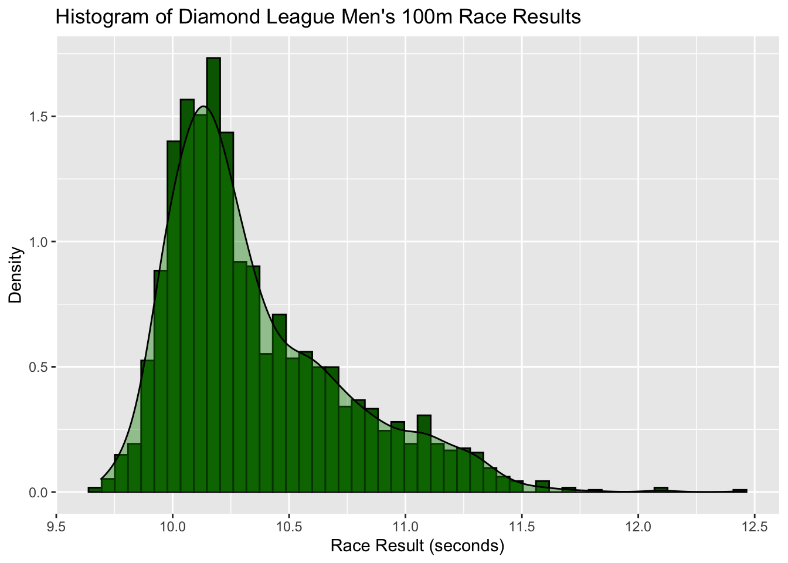
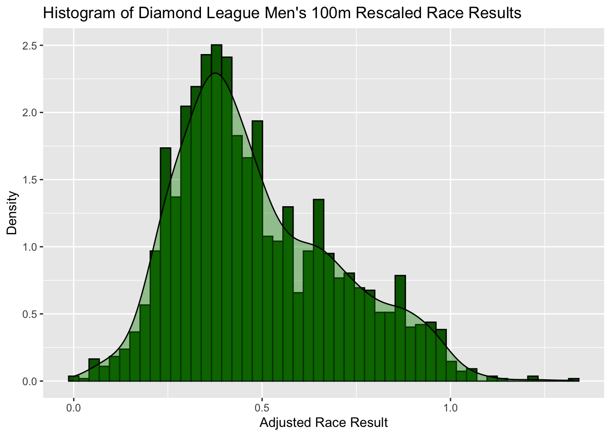
We also grouped results by legal or illegal wind speed by creating a boolean variable IsLegal that takes the value TRUE if the recorded wind speed is less than the +2.0m/s legal threshold and FALSE if the recorded wind speed is greater than the legal threshold.
c. Methods
To determine the wind threshold under which race results are independent of wind speed, for each possible wind threshold ranging from 0.1 up to 4 incremented by 0.1, we fit a linear regression model to the relationship between wind speed and log-scaled result times for races under that wind threshold. We did this by filtering results to include only those under a given threshold, then fitting a linear regression to this subset of observations. A threshold is deemed fair if log-scaled race results could reasonably be independent of wind for wind speeds under that threshold.
3 Results
We preliminarily notice that there is a clear relationship between illegal wind speeds and race results. Side-by-side boxplots of race results sorted by wind legality demonstrate that race results are much faster when wind speeds are illegal. This relationship also appears in the scatter plot of race results by wind speed, with a noticeable downward trend.
Code
```{r}#| code-fold: truedf2 <- df2 %>%mutate(IsLegal = Wind <=2.0)df2 %>%ggplot(aes(x = IsLegal, y = log_times, fill = IsLegal)) +geom_boxplot()+xlab("Result is Wind Legal") +ylab('Rescaled Race Result') +ggtitle('Distribution of Race Results sorted by Wind Legality')df2 %>%ggplot(aes(x = Wind, y = log_times)) +geom_point() +xlab('Wind Speed (m/s)') +ylab('Rescaled Race Result') +ggtitle('Scatterplot of Race Results by Wind Speed')```
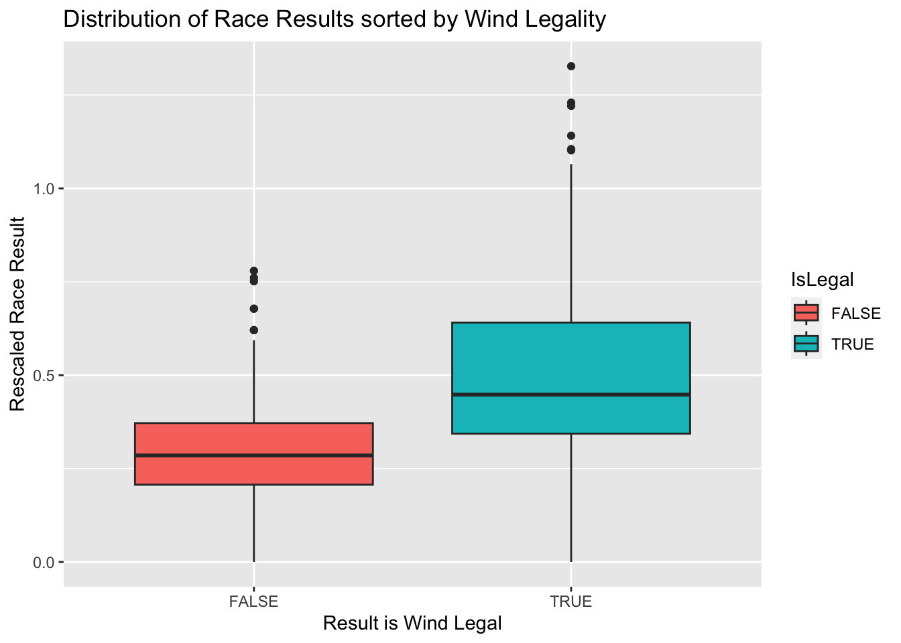
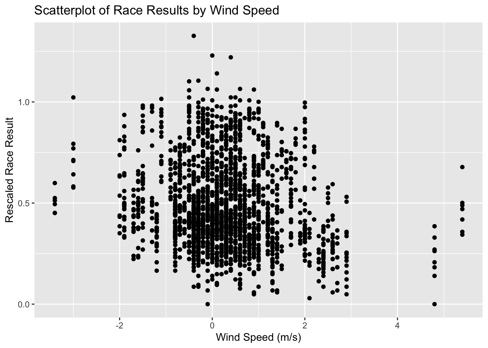
As a continuation, we conduct hypothesis testing of rescaled race results against wind speed for various wind speed thresholds. For each test, we filter results to only include those with a wind speed below the threshold of interest. We test the null hypothesis of no relationship between rescaled results and wind speed against the alternative hypothesis of a relationship between rescaled results and wind speed. We conduct 40 such tests, so we use an adjusted \(\alpha\)-threshold of \(\alpha = \frac{0.05}{40}\) to guard against p-hacking. Below is a scatterplot of the resulting p-value from the linear model against the wind threshold used for that test. The highest threshold with a p-value above 0.05 is a wind threshold of 1.8 meters per second, with \(p = 0.11\). The current threshold of 2.0 meters per second yields \(p = 0.015\). The highest threshold with a p-value above \(\frac{0.05}{40} = 0.00125\) is 2.3 meters per second, with \(p = 0.003.\)
Code
```{r}#| code-fold: truelibrary(tidymodels)library(ggfortify)threshold_p_value <-function(threshold){ filtered_data <- df2 %>%filter(abs(Wind) <= threshold) model <-lm(log_times ~ Wind, data = filtered_data) return(summary(model)$coefficients[2,4]) } thresholds =seq(0.1, 4.0, by =0.1) #threshold_p_value(2.4)p_values =lapply(thresholds, threshold_p_value)plot(thresholds, p_values, pch =20, cex = .5,main ="P-value of linear models for each wind threshold")abline(0, 0.05/40)```
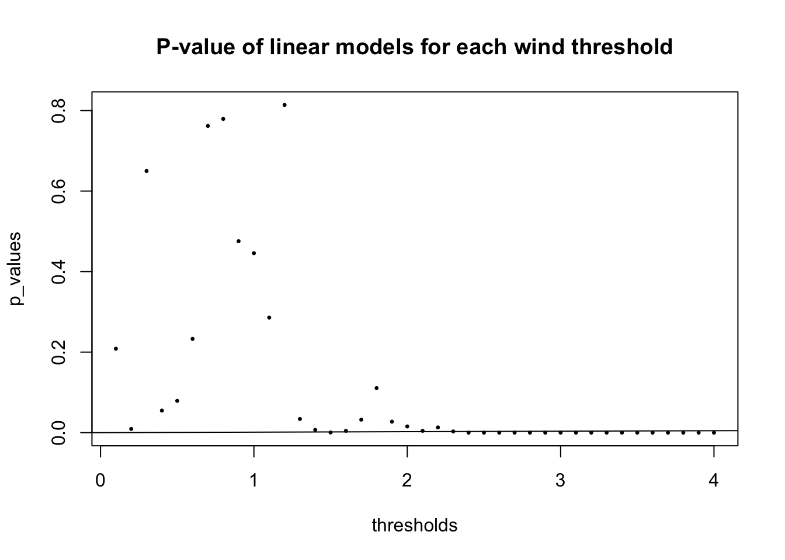
Below is our fitted linear model of rescaled results vs wind speed using a wind speed threshold of 2.4 m/s. This the the lowest threshold showing a statistically significant relationship between wind speed and rescaled race results, with a p-value of 0.00000724. The linear relationship is modeled by the equation log_times\(= 0.49586 - 0.02443*\)Wind, yielding a relationship of Result\(=e^{0.49586-0.02443*\text{Wind}} + 8.69\). There is very little remaining pattern to residuals, but residuals seem to depart from normality.
Code
```{r}#| code-fold: truefiltered_data <- df2 %>%filter(abs(Wind) <=2.4)model <-linear_reg() %>%set_engine('lm') %>%set_mode('regression')model_fitted <- model %>%fit(log_times ~ Wind, data = filtered_data)# model_fittedfiltered_data %>%ggplot(aes(x = Wind, y = log_times)) +geom_point() +geom_abline(slope =-0.02443, intercept =0.49586, color ='red')+ylab('Rescaled Race Results') +ggtitle('Linear Model of Rescaled Results vs Wind with Threshold 2.4 m/s')autoplot(model_fitted, c(1, 2))```
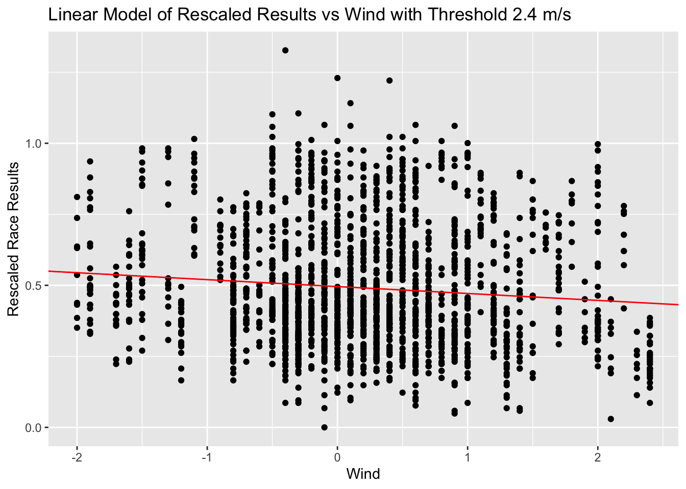
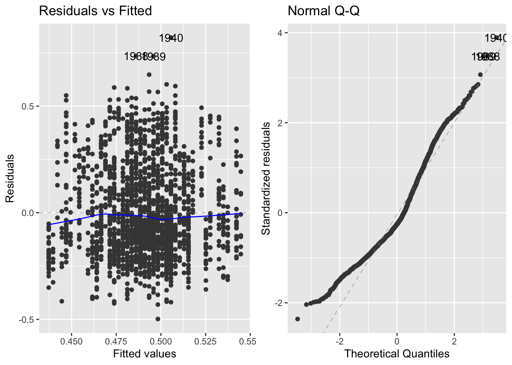
4 Discussion/Conclusions
We wish to find the largest fair wind threshold; that is, the highest threshold under which results are independent of wind speed. Since we are fitting a model for each of the 40 potential thresholds, we must adjust our \(\alpha\)-threshold to \(\frac{0.05}{40} = 0.00125\) to guard against p-hacking.
The p-value that we obtain for each model indicates significance under the null hypothesis that the re-scaled finish times are not affected by wind speed. A p-value below our \(\alpha\)-threshold allows us to reject the null hypothesis, conveying that the finish times are dependent on the wind speed.
Using the current threshold of 2.0 meters per second, we obtain a p-value of 0.015, indicating that there is no significant relationship between wind speed and race results. The highest threshold with a p-value above 0.00125 is 2.3 meters per second, with \(p = 0.003.\) Therefore the higher threshold of 2.3 meters per second still shows no significant relationship between results and wind speed, so this is a better threshold than the current 2.0 meter per second regulation. Notice that without adjusting our \(\alpha\)-threshold to guard against p-hacking, we would find that the current regulation is reasonable, since 1.8 m/s is the last wind threshold with a p-value above 0.05. Therefore the current threshold may be a result of improper data analysis, and we recommend increasing the wind threshold to 2.3 meters per second. We would be interested in continuing to monitor the Diamond League results to update or confirm our findings as we gather more observations.
6 Appendix
6.0.1 Visualizations of Variable Distributions
Code
```{r}#| code-fold: truelibrary(tidyverse)library(patchwork)plot1 <- df %>%ggplot(aes(x =`Result`, y = ..density..)) +geom_histogram(bins =50, fill ='darkgreen', color ='black') +geom_density(fill ='green4', alpha =0.4) +xlab('Race Result (seconds)') +ylab('Density') +ggtitle("Histogram of Race Results")df2 <- df %>%mutate(IsLegal = Wind <=2.0) %>%mutate(log_times =log(Result -min(Result) +1))plot2 <- df2 %>%ggplot(aes(x =`log_times`, y = ..density..)) +geom_histogram(bins =50, fill ='darkgreen', color ='black') +geom_density(fill ='green4', alpha =0.4) +xlab('Rescaled Race Result') +ylab('Density') +ggtitle("Histogram of Rescaled Race Results")plot1+plot2```
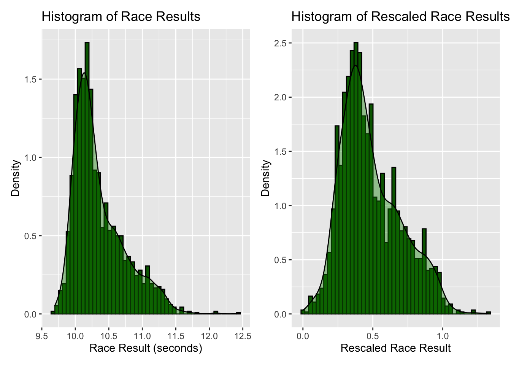
Code
```{r}#| code-fold: truedf %>%ggplot(aes(x =`Wind`, y = ..density..)) +geom_histogram(bins =50, fill ='darkgreen', color ='black') +geom_density(fill ='green4', alpha =0.4) +xlab('Wind Speed (m/s)') +ylab('Density') +ggtitle("Histogram of Recorded Tailwind Speeds")```
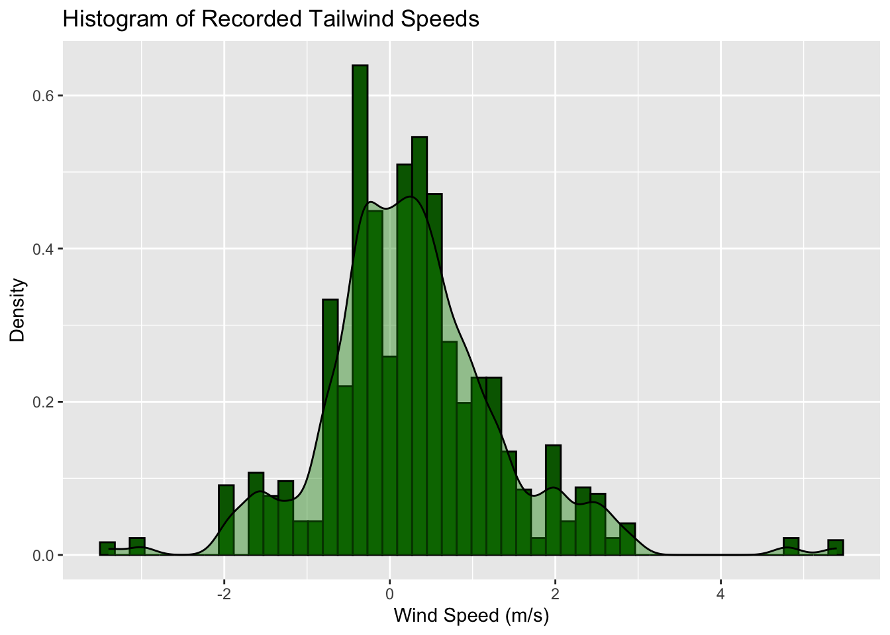
6.0.2 Visual Summary for the Linear Model of the Current Wind Threshold 2.0 m/s
Code
```{r}#| code-fold: truefiltered_data <- df2 %>%filter(abs(Wind) <=2.0)model <-linear_reg() %>%set_engine('lm') %>%set_mode('regression')model_fitted <- model %>%fit(log_times ~ Wind, data = filtered_data)# model_fittedfiltered_data %>%ggplot(aes(x = Wind, y = log_times)) +geom_point() +geom_abline(slope =-0.01422, intercept =0.49751, color ='red')+ylab('Rescaled Race Results') +ggtitle('Linear Model of Rescaled Results vs Wind with Threshold 2.0 m/s')autoplot(model_fitted, c(1, 2))```
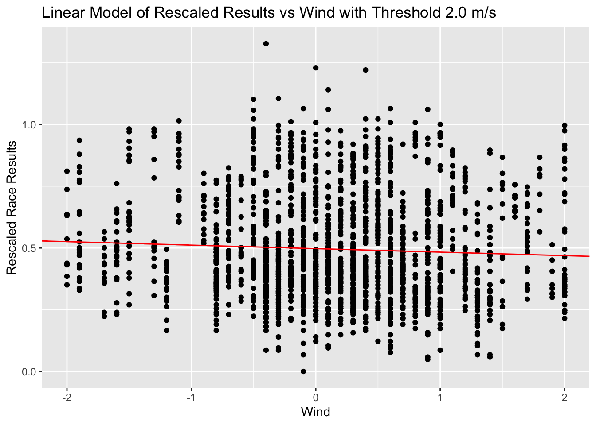
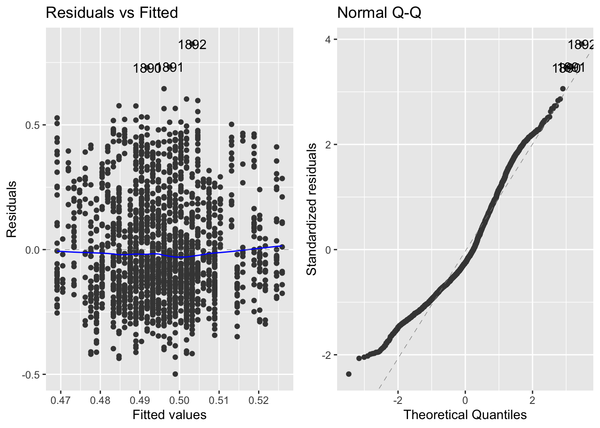
5 References
[1]
Wickham, H., Averick, M., Bryan, J., Chang, W., McGowan, L. D., François, R., Grolemund, G., Hayes, A., Henry, L., Hester, J., Kuhn, M., Pedersen, T. L., Miller, E., Bache, S. M., Müller, K., Ooms, J., Robinson, D., Seidel, D. P., Spinu, V., Takahashi, K., Vaughan, D., Wilke, C., Woo, K. and Yutani, H. (2019). Welcome to the tidyverse. 4 1686.